Change is on the horizon.
MINI
Launching a contactless way to buy a car, in eight simple steps.
When the way people buy a car started to change, MINI Park Lane built a complete contactless process and launched it with a campaign that treated the change as something to look forward to. Choose, arrange and take delivery of a new MINI from home, in eight simple steps.
The brief
A new way to buy, made easy to trust.
The way people buy a car was changing, and a premium retailer had to meet that without losing the feel of the brand. MINI Park Lane had spent a year building a contactless purchase process. The job was to introduce it clearly, make every step feel simple, and frame the change as a positive one rather than a compromise.
The idea
Change is on the horizon.
The campaign took the open road as its image and the horizon as its promise. Change was coming, and it was something to look forward to. One line carried the whole idea, set against a road climbing toward first light, and gave a practical launch the optimism of a drive into the morning.
The eight steps
The whole process, drawn as one road.
The heart of the campaign was a social carousel that laid the new process out as a single road, eight numbered stops from finding your MINI to taking the keys. Find your MINI, a virtual appointment, an optional test drive, pre-order with ease, compliant paperwork, a pre-handover video pack, contactless handover, and a place in the Park Lane community after.
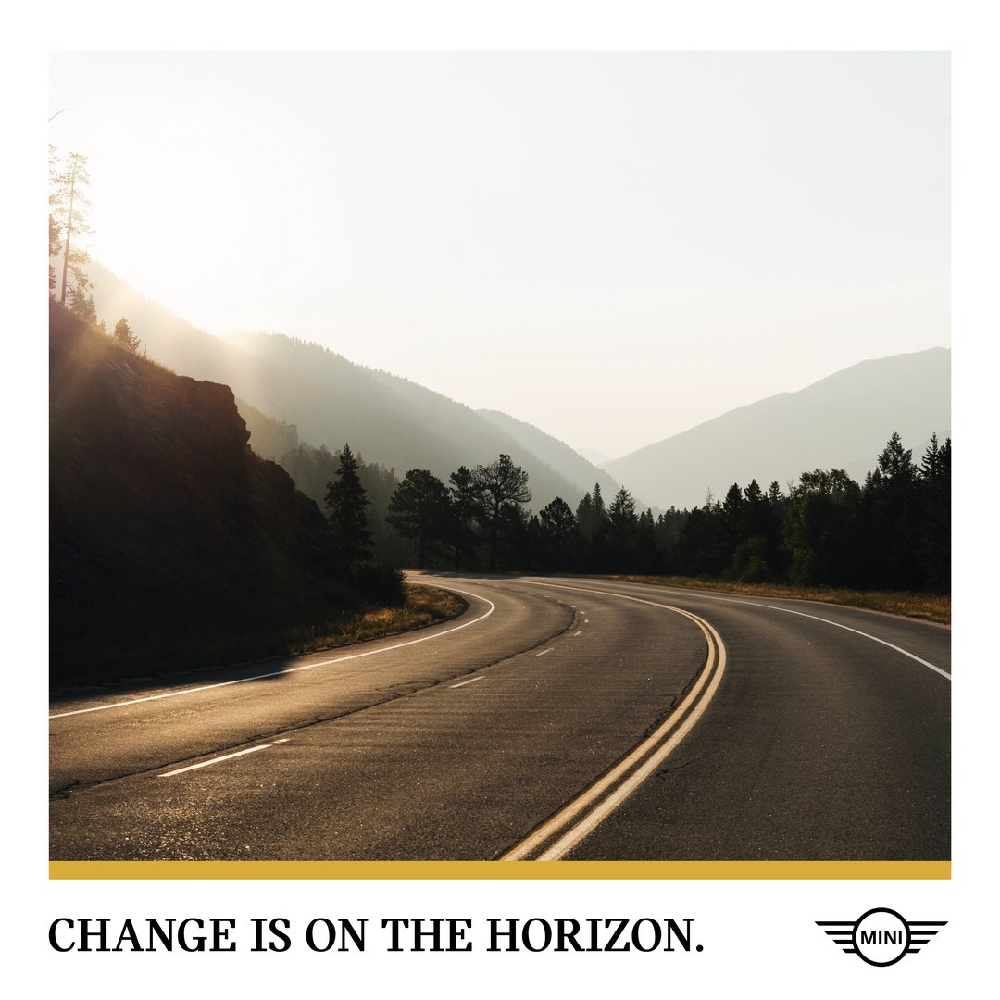
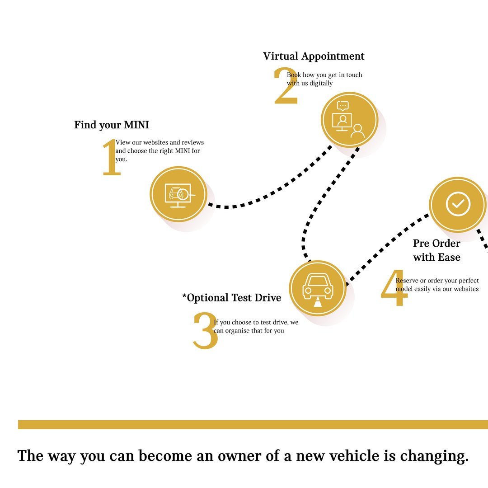
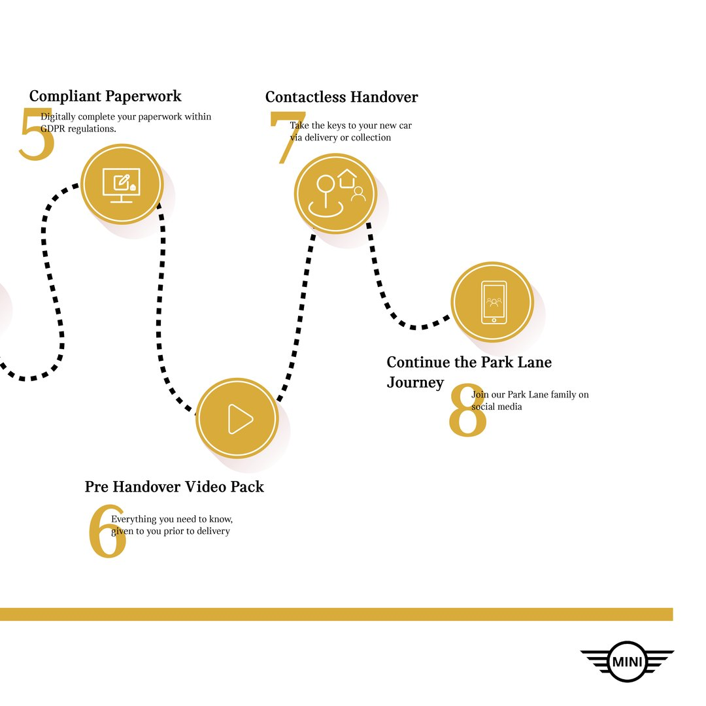
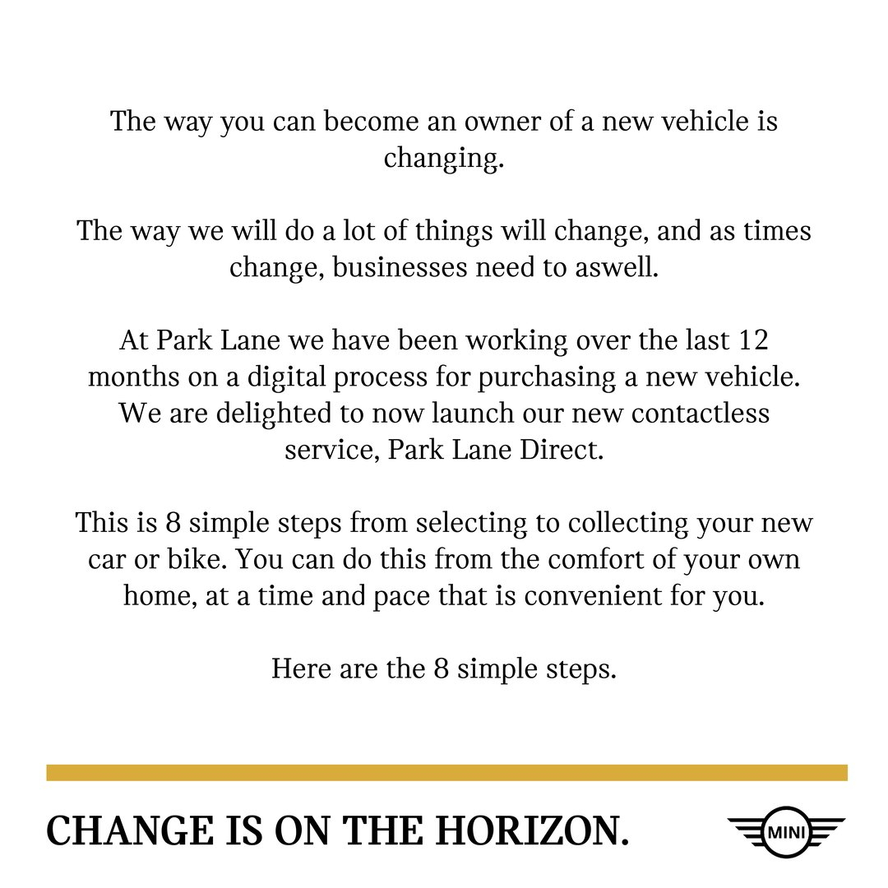
The system
A set of icons, a run of stories.
Each step had its own icon and its own story frame, a small system that let the process scale from one carousel to a full run of stories without losing its shape.
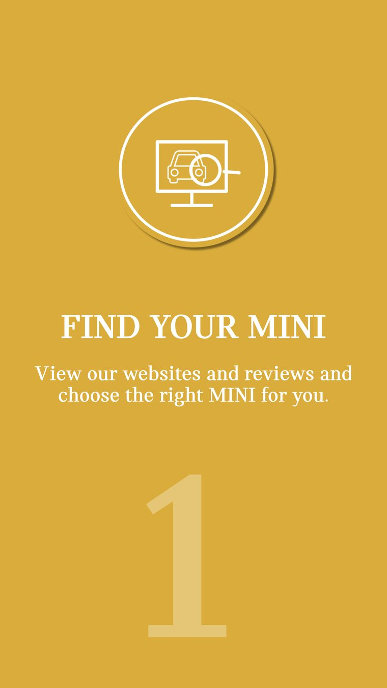
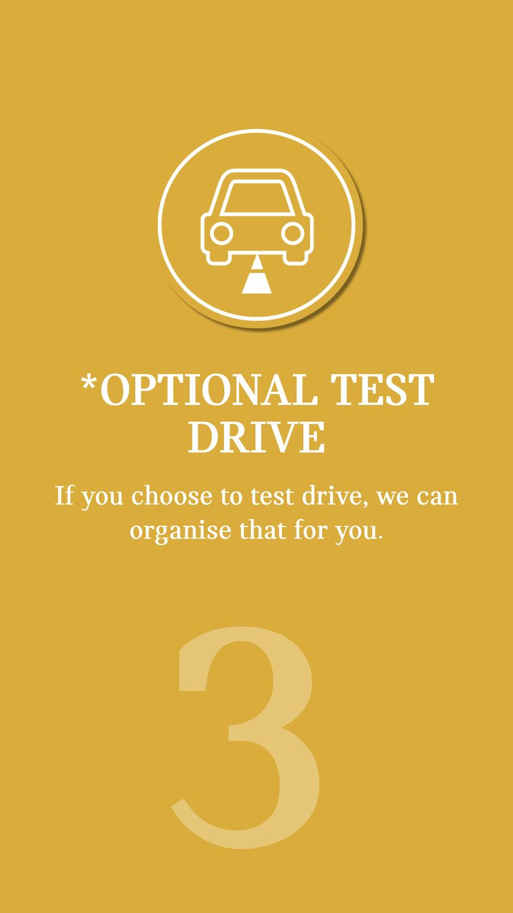
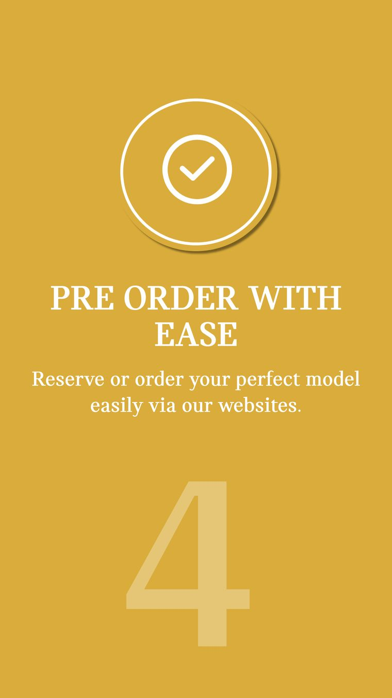
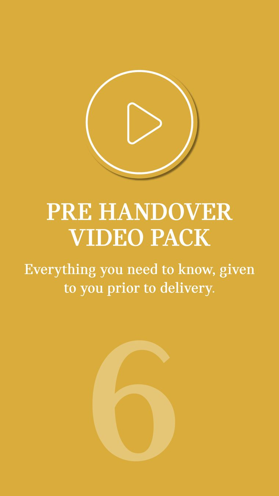
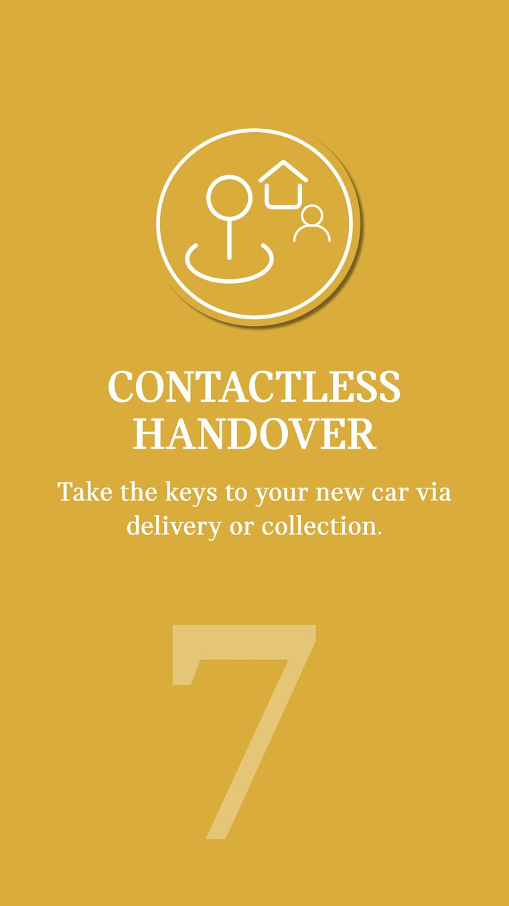
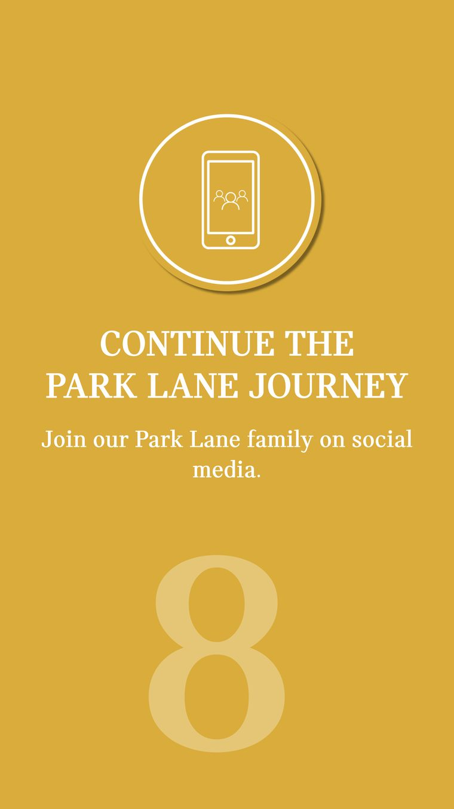
The road map
The eight steps as one continuous road.
Pulled together, the eight steps became a single road map that a customer could read top to bottom, the whole new way to buy in one frame.
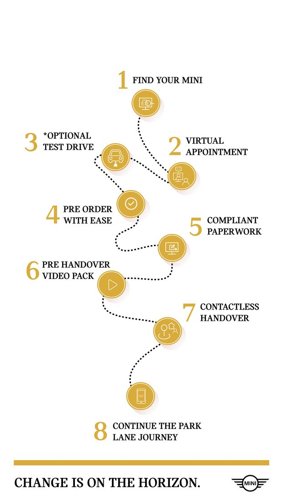
Three colourways
The same frames, produced three ways.
Every step was built in three colourways, so the series could run across a busy feed and still hold together as one campaign.
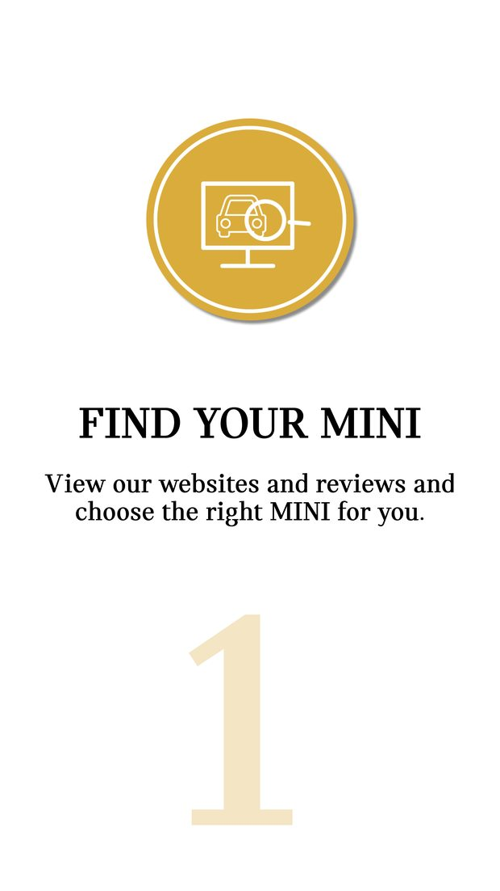
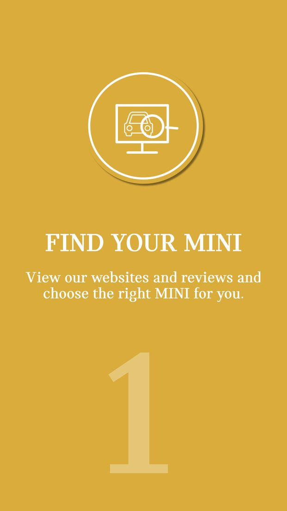
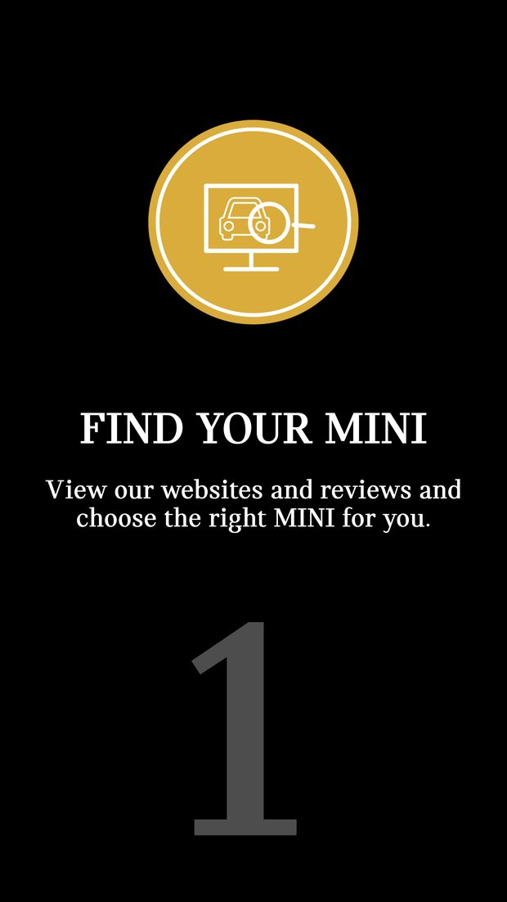
In email and on the web
The line, carried across every header.
The same image and line ran as email and website headers, a calm, consistent frame for the message wherever a customer met it.
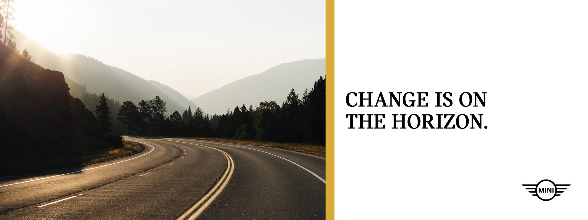
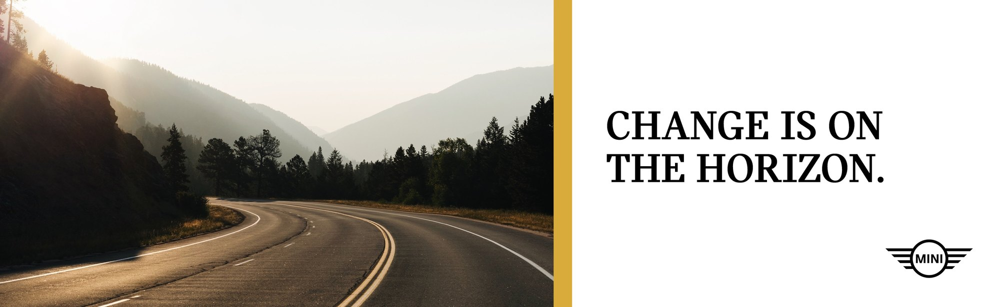
The outcome
A practical change, given something to look forward to.
The campaign turned a year of operational work into a clear, confident launch. A new way to buy was introduced as a simple set of steps, carried across email, web and social in one consistent voice, and framed not as a workaround but as the next thing to look forward to.
Where does your brand sit against the business?
Every engagement starts with the Brand Alignment Diagnostic, a fixed first step that scores your brand against the business and shows what to fix first.